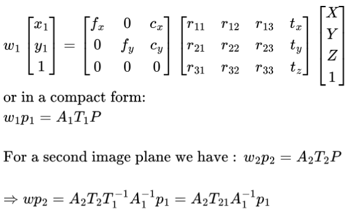
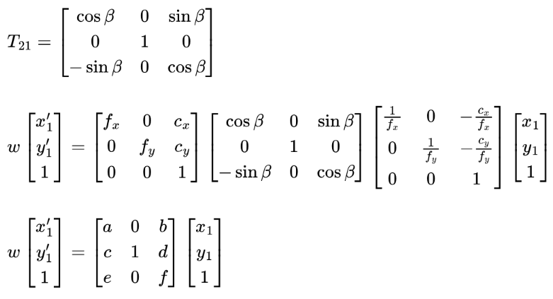
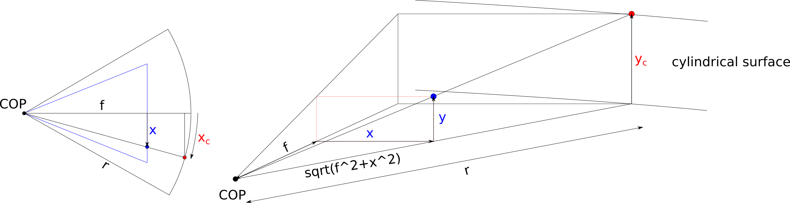
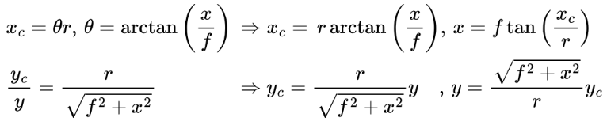
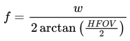

In Project 3, we applied image warping using an affine transformation, which is effective when both images are captured from the same plane without any camera rotation. In this project, we will use a different transformation to warp images taken from various angles but from the same location. This technique is commonly used for image stitching and creating image mosaics. The entire pipeline is illustrated below, with corresponding sections for each component.
Figure 1 demonstrates the basic idea of homography warping. Given two images taken from different angles, we want to project them onto an arbitrary image plane to create a single, wide-field-of-view image. The goal is to determine the correct transformation function that accurately projects these images onto the chosen reference image plane. To simplify this process, we use one image plane as the reference, eliminating the need to create a new coordinate system for an image plane. For images with a fixed Center of Projection (COP), this can be achieved using a perspective transformation.
Let's take a closer look at the transformation matrix to better understand its structure and how it works. To project a 3D point in space [X, Y, Z] onto an image plane coordinate [x, y], we have:
A1 is usually called the camera intrinsic matrix, while T1 is referred to as the camera extrinsic matrix, which transforms 3D points from a fixed coordinate system to the camera coordinate system. T21 is the transformation matrix that transforms coordinates from camera 1's coordinate system to camera 2's coordinate system.
We can now examine how various factors affect the complexity of these equations:
If we fix the COP and allow zooming, we will have 3 + 6 = 9 unknowns (we can normalize the last entry, leaving us with 8). The expression A2 × T21 × inv(A1) will yield the perspective matrix. If we capture images with a fixed COP and control the rotation (e.g., rotating only horizontally or around the y/vertical axis), we can simplify the matrix T21. We will discuss the rotation model later.
It is also possible to warp images onto the same image plane even without a fixed COP; however, this would introduce three additional unknowns (representing translation between the cameras).
We can use correspondences to find the perspective matrix we need. The perspective matrix M is in the form of [[a, b, c], [d, e, f], [g, h, 1]]. Given a point [x1, y1] and the transformed point [x1', y1'], we have:
where w is the scaling factor and can be interpreted as the depth of the point.
We can rewrite this in the form:
To solve this linear system of equations, we need to have at least 4 pairs of correspondence points. Since we are selecting correspondence points by hand, which is not pinpoint accurate, it is better to have more than 4 pairs of correspondence points to achieve robust results. We can then find the perspective matrix by solving the least squares problem.
We can also use this method to find the perspective matrix that can be used to rectify an image. We can pick some keypoints on an image and define their coordinates on an image plane. For example, we can select the 4 corners of a window from an image and define their coordinates as the corners of a rectangle. We can then compute the perspective matrix and transform this image into the new image plane with the "rectification effect".
As we mentioned in the previous section, if we only rotate the camera, it is possible to simplify the transformation matrix. Additionally, it is possible to back-compute the camera intrinsic parameters from the transformation matrix.
If we take images using a fixed COP, with no zooming, and only rotate the camera horizontally (i.e., rotate along the camera's y/vertical axis), we can understand the structure of the transformation matrix.
The result of using the rotational matrix model to perform image mosaicing is shown here.
Planar projection is not the only option here; we can also project images onto a cylindrical surface. Figure 2 illustrates cylindrical projection. Note that the x/horizontal axis does not follow the curve of the surface.
We can map the coordinates between the planar and cylindrical surfaces as illustrated below. \( f \) is the focal length of the camera, and \( r \) is the radius of the cylinder, which is a tunable parameter we decide.
Important: To simplify the formula, we shift the coordinate system so that the center of the image is located at the origin. Therefore, we need to shift it back to the regular image coordinate system after computing (i.e., the top-left corner pixel is located at the origin).
We can derive the formula for forward and inverse mapping between the planar and cylindrical surfaces:
The focal length of the camera can be computed as:
HFOV: horizontal field of view.
Below are some sample images projected onto the cylindrical surface; here, I set the radius equal to the focal length \( f \). I am using a camera with an HFOV of 65.6 degrees. Notice the distortion effects on the images from cylindrical projection (especially the bending of the building edges).
Planar image
Cylindrical image
Planar image
Cylindrical image
Planar image
Cylindrical image
Planar image
Cylindrical image
There are two ways to do image mosaicing. One method is to warp two images and produce a new image, then repeat this step to recursively generate the final mosaic. The other method is to warp all images onto one common reference plane and blend them. Here, I chose the "one-shot" method. I will skip the technical details and just describe the general steps.
Planar image 1
Planar image 2
Warpped image 1
Warpped image 2
Averaging blending
Multi-band blending
Mask used by image 1 in multi-band blending
Planar image 1
Planar image 2
Warpped image 3
Warpped image 4
Multi-band blending
Planar image 1
Planar image 2
Planar image 3
Planar image 4
Multi-band blending
Planar image 1
Planar image 2
Planar image 3
Multi-band blending
We use the rotational model to warp the image. Noticed that since we assume pure rotation, the image verticle edges are stricly verticle, whcih is differnt than the one using perspective matrix.
Multi-band blending using rotational model
When using cylindrical coordinate, we can just simply use a trasnlation matrix rather than perspective matrix to warp the image. The only diffence here is we need to warp the correspondence keypointsthe to the cylindrical coordiantes first and then compute the translation matrix and use it to warp the images, the rest of the workflow is the same.
Multi-band blending with cylindrical projection.
You can see that compare to the planar mosaic, the cylindrical mosaic looks better and don't have the strong distorsion effect when the image is away from the reference image center. You can see that the warpped image 4 in the plannar surface is largely distorted since it is relatively far away form the image 2, which is our reference image. But we won't see such strong distrosion in the cylindrical surface.
We can use cylindrical projection to generate a 360° panorama. Ideally, the first and last images should "close the loop," but in our case, they are not perfectly aligned due to numerical errors and the images not having a perfectly fixed COP. Instead of aligning two images at a time, a better approach might be to align all images using global optimization. For now, we will leave it as is.
12 images used for 360 panorama.
360 Panorama using multi-band blending.
We can use cylindrical projection to generate a 360° panorama. Ideally, the first and last images should "close the loop," but in our case, they are not perfectly aligned due to numerical errors and the images not having a perfectly fixed COP. Instead of aligning two images at a time, a better approach might be to align all images using global optimization. For now, we will leave it as is.
So far, we have been finding correspondences manually, which can be time-consuming and prone to errors and bias. To automate this process, we will develop the following three components in this section:
We are following the methodology from "Multi-Image Matching using Multi-Scale Oriented Patches" (Matthew Brown et al., 2005) to implement these components.
We begin by extracting keypoints (or interesting points) using the Harris Corner Detector. To downsample the keypoints, it’s common to select the top-k keypoints with the highest "Harris corner strength". However, this approach may lead to clustering of keypoints, which is not ideal for image stitching. Since we don’t know which parts of the image will be matched with others, it’s preferable to have keypoints distributed more uniformly across the image.
To achieve this, we will use Adaptive Non-Maximum Suppression (ANMS), introduced by Matthew Brown. The idea of ANMS is straightforward: it sorts keypoints based on a specific radius, which represents the distance to the nearest keypoint that meets a certain "Harris corner strength" criterion. Formally, we define the radius r_i = min(|x_i - x_j|) where f(x_i) < c*f(x_j), with c being a constant.
The figures below illustrate the difference in keypoint detection with and without ANMS. You can see that keypoints filtered by the ANMS method are more evenly distributed across the image compared to those selected without using ANMS.
Top 500 keypoints with the highest Harris corner strength (marked in green).
Top 500 keypoints filtered by ANMS (marked in green).
Top 500 keypoints with the highest Harris corner strength (marked in green).
Top 500 keypoints filtered by ANMS (marked in green).
Top 500 keypoints with the highest Harris corner strength (marked in green).
Top 500 keypoints filtered by ANMS (marked in green).
After detecting the keypoints, we use an 8x8 patching method to form a 64-byte vector that encodes pixel information around each keypoint.
First, we determine the orientation angle of each keypoint by computing the gradient at that location. Then, we sample an 8x8 patch around the keypoint. To reduce aliasing, we sample every 5 pixels, which requires sampling from a 40x40 area around the keypoint.
Orientation/gradient vector of a keypoint (marked with a blue arrow) and its 64 sampling points (marked with green dots).
We can treat each descriptor as a 64-byte vector, therefore, we can use the L2 norm to
compute the "distance" between each pair of descriptors. A naive approach would use
brute-force computation to evaluate all possible combinations and find the top-k pairs.
A more efficient approach is to use a KD-tree structure. In this project,
scipy.spatial.cKDTree was utilized to find the k-nearest neighborhood
descriptors for a given query descriptor.
Given a query descriptor, after obtaining the top-k descriptors with the lowest distances, we would normally take the first one as the match. However, even the top matching result is not always correct. To reduce this possibility, we apply Lowe's ratio test to find the "good" matches. The idea is to compute the ratio between the 1st and 2nd matching results. If the ratio is higher than a predefined threshold, the 1st match is considered "good." In addition, I also set a maximum distance threshold, ensuring that any "good" match does not exceed this limit.
The figure below shows some examples of "good" matches between images. You might notice that some matches look incorrect even though they have small descriptor distances. This can occur when a scene contains multiple similar features, such as the corners of windows or doors with similar styles. This can be problematic if we directly use them to solve our transformation/warping matrix. We will address this problem in the next section.
Image pair 1. Matched features are connected by red lines.
Image pair 2. Matched features are connected by red lines.
Image pair 3. Matched features are connected by red lines.
We can create a Gaussian pyramid of the input images, and the processes described above still apply. The only thing to pay attention to is that the detected keypoints need to be scaled back to the original size when we use them to compute the transformation matrix, as we are stitching the original image.
Below are some images illustrating the multi-scale process. Outliers (incorrect matches) and inliers (correct matches) are identified through RANSAC estimation, which we will discuss in the next section. As the number of pyramid levels increases, we observe that the number of outliers decreases.
Image pair at pyramid level 0 (original images). Inliers and outliers are identified using the RANSAC method. Outlier matches are marked in red, while inlier matches are marked in green.
Image pair at pyramid level 1 (blurred with a (5,5) Gaussian window and halved in size). Inliers and outliers are identified using the RANSAC method. Outlier matches are marked in red, while inlier matches are marked in green.
Image pair at pyramid level 2 (blurred with a (5,5) Gaussian window and halved in size). Inliers and outliers are identified using the RANSAC method. Outlier matches are marked in red, while inlier matches are marked in green.
We can now automatically find correspondences from image pairs using the feature-based method. However, this method may still yield incorrect matches due to similar features present in the scene. Therefore, we will use Random Sample Consensus (RANSAC) to enhance the robustness of the transformation estimation against these outliers.
The idea behind RANSAC is to randomly sample four points (the minimum number of points required to solve the perspective transformation matrix), compute the matrix, and track the number of inliers/outliers using the given combination. After repeating this process N times (e.g. N=1000), we select the combination with the largest number of inliers, or the smallest number of outliers, then solve the perspective matrix using all the inliers.
The figure below illustrates the inliers and outliers of the matched pairs.
Image pair 1. Outliner matches are marked in red, inliner matches are marked in green.
Image pair 2.Outliner matches are marked in red, inliner matches are marked in green.
Image pair 3. Outliner matches are marked in red, inliner matches are marked in green.
We can now automate the image mosaicing process by using a feature-based method to obtain correspondences and compute the transformation matrix. Below are the mosaics created using manually found correspondences and automatically detected correspondences. You can see that these results are visually identical. Note that both processes still require manually defining the blending order between images, which we will address in the next section to create a fully automated image mosaicing process.
Mosaicing using manually labeled correspondences.
Mosaicing using feature-based detected correspondences.
Mosaicing using manually labeled correspondences.
Mosaicing using feature-based detected correspondences.
Mosaicing using manually labeled correspondences.
Mosaicing using feature-based detected correspondences.
Although we can detect correspondences automatically and use them for image mosaicing, we still need to ensure that the input images can be stitched together and define how the images should be blended. In this section, we will automate this manual input so that we can simply provide a set of images, and the system will automatically recognize images with overlaps and create a mosaic or panorama.
To achieve this, we need to do the following:
Step 1 can be achieved using the feature-based method described in the previous section. The key challenge is step 2, which involves finding, if it exists, a sequence/path that connects image i to image j (in this case, our reference image). This will be solved using a graph data structure.
We can find a path from image i to image j using a graph data structure. First, we will iterate through all possible combinations of image pairs to form the connectivity/adjacency matrix. Image i and image j are connected if they have a minimum of k matched features. A graph might look something like the figure below, where the link number represents the number of matched features and the node number is the image index. We can now use the graph to find the path from image i to image j.
Graph example.
Normally, we can use the Breadth-First Search (BFS) algorithm to find the shortest path from image i to image j, if it exists. However, during experiments, it became evident that even though two images are distant from each other, they may still have enough matched features to meet the threshold k. The resulting transformation matrix might not align the images properly. For example, in the graph shown above, if we set image 3 as the reference path, using the shortest path method may reveal a direct transformation from image 1 to image 3. Even though the transformed image 1 can align perfectly with image 3, it may not align well with image 2.
Increasing the threshold is not a scalable approach, as it can sever weakly connected but critical image links (e.g., using a threshold of 25 may cut the link between image 2 and image 3, which are both part of the mosaic).
Illustration of the shortest path issue. Eventhough image 1-3 has good matches (left), the error still casuing misalignment between image 1 and 2 (right) since all the matches betwen 1-3 are concentrate on a small area.
A better approach is to use a modified version of BFS to track the number of inlier matches along the path and to keep the path that has the highest minimum matches. In the previous example, the path 1-2 has a minimum match of 12, while the path 1-2-3 has a minimum match of 20. Hence, the new algorithm will choose the 1-2-3 path, which is more reliable. Since we are not finding the path with cumulative maximum matches (like Dijkstra's algorithm), we can also avoid paths like 2-1-3.
Now we can pick a reference image. The simplest way would be to select the node with the most links. However, we may encounter scenarios where an image near the edge also has matches with distant images. This can result in the warped area requiring a large amount of memory to allocate these images, and the multi-band Laplacian blending can exacerbate this situation. To reduce the likelihood of encountering this issue, we decided to use the node with the largest amount of matches as the reference node (in the previous example, this would be image 2).
In my previous implementation, I used one-shot blending to warp all images on the same image plane first and then blend every two overlap images manually. More specifically, I first sum all the pixel values, and then blend the overlap area between two image pair defined manually. This workflow becomes complicated in the automated system. Therefore, I implemented a modified version. The idea is similar, for each image, I define a "distance mask" where each pixel has a value to the nearst edge of the warped image. Then I will compute the alpha mask for blending for each image, where the mask value at pixel (i,j) is decided by distances across all the images distance masks at the same localtion.
Manual stitching
Auto stitching.
Manual stitching
Auto stitching
Manual stitching
Auto stitching
This project was a large but interesting project, during which I used the images I collected and played with the things I learned from the class. Even though the concept is not difficult, it still takes a lot of time and effort to overcome many technical challenges, like which data structure is suitable for the warping application and how to manipulate the images in an efficient way (e.g., for loops vs. vectorization). And it is pretty cool to see my code work at the end after intense debugging.